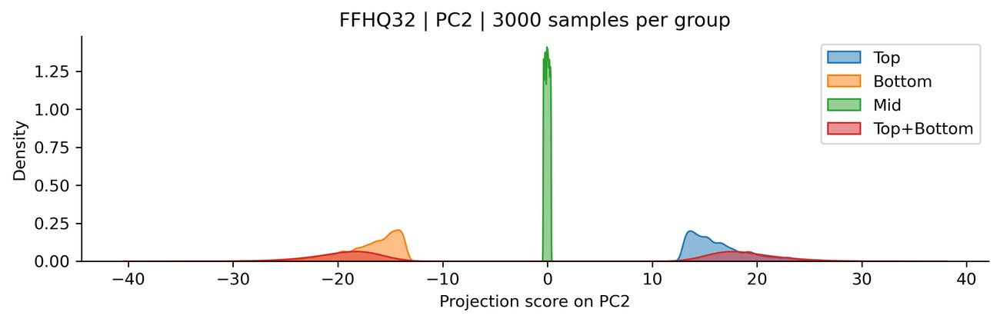
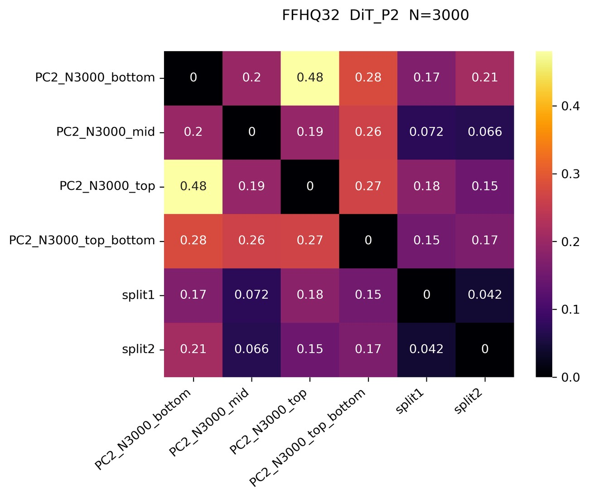

1 The observation
Train two diffusion models on disjoint halves of a dataset and sample both from the same noise seed. The outputs are nearly identical — across splits and across architectures. Why should two models that never saw the same image agree? Here is the linear intuition.
Empirical Gaussian statistics — the first two moments
Both the linear denoiser $\mathbf D^*$ and the sampling map $\mathbf x^*$ depend on the data only through $(\hat\mu,\hat\Sigma)$. Across independent splits these first two moments barely change — so the maps barely change, and the generated samples come out consistent. Under high noise and in the generalization regime, deep diffusion models reduce to this same linear / far-field solution, which is why it predicts them.
Explore it yourself. Pick a dataset and a noise seed. Split 1 and Split 2 are independent models trained on disjoint data; Linear theory is the closed-form Gaussian (Wiener-filter) predictor above, using only each split's $(\hat\mu,\hat\Sigma)$. The outer rows show each split's nearest training images — note the samples are not copies of them.
Takeaway. Cross-split and cross-architecture outputs are closer to each other than to the nearest training image — this is generalization, not memorization — and the linear predictor already calls the shot.
▸ What if we break it? — disrupting the first two moments
If consistency really comes from shared $(\hat\mu,\hat\Sigma)$, then forcing the splits to have different moments should destroy it. We stratify the data along a principal component (PC2) into top, bottom, and mid groups — deliberately mismatching the mean and covariance across "splits."


The linear theory is therefore a necessary condition: when Gaussian statistics differ, even deep networks stop being consistent.